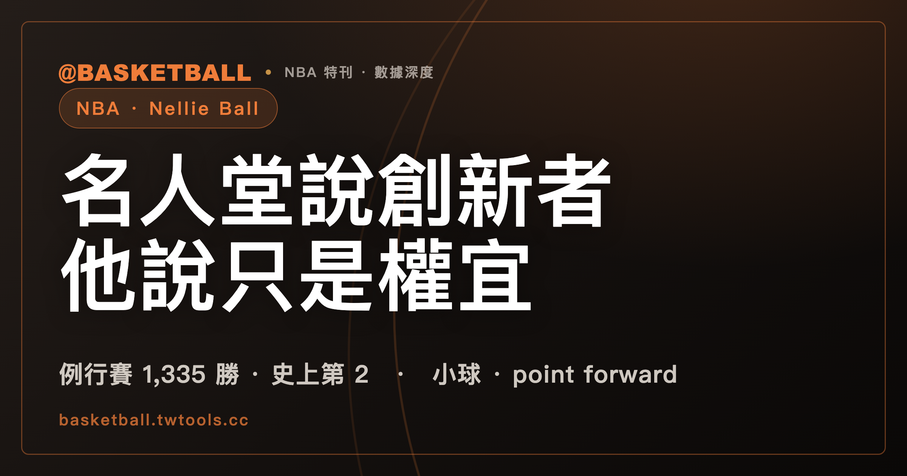

尼爾森（Don Nelson）的 Nellie Ball：名人堂說他是創新者，他說只是權宜
尼爾森於 2026 年 8 月 9 日辭世，享年 86 歲。他以 1,335 勝排名 NBA 史上例行賽勝場第 2。名人堂官網稱他是小球進攻的創新者，也說 point forward 的概念由他帶進籃球；NBA.com 的悼念專文則寫這個詞的發明權有爭議；他本人說 Nellie Ball 只是缺少好長人時的權宜之計。

Nellie Ball · 小球｜point forward · 例行賽 1,335 勝
同一套打法，留下了兩種很不一樣的說法。
Naismith 籃球名人堂官網把尼爾森稱為小球進攻的創新者與最大推行者，也說 point forward 的概念由他帶進籃球。尼爾森本人卻說，Nellie Ball 不是一套哲學，只是陣中沒有好長人時的權宜做法。他還把功勞交給了 Red Auerbach。
NBA.com 的悼念專文又在兩種說法之間加了第三種。Point forward 這個詞由誰提出，Del Harris、Robert Reid 與 Marques Johnson 都有相關主張。這篇專文能確認的是，尼爾森至少推廣了這個概念，也在比賽中反覆使用。
名人堂的認證、NBA.com 的記述與當事人自述，談的是同一個人，重點卻不在同一處。Nellie Ball 最值得留下來的部分，正是這段落差。
名人堂稱尼爾森為創新者，尼爾森把功勞交給 Red Auerbach
三個高等級來源各自留下了一種定位。
| 誰在說 | 對 Nellie Ball 與 point forward 的說法 | 說法出處 |
|---|---|---|
| Naismith 籃球名人堂官網 | 稱尼爾森是小球進攻的創新者與最大推行者，也稱 point forward 概念由他帶進籃球 | 名人堂官網名人資料頁 |
| NBA.com 悼念專文 | Point forward 一詞的發明權有爭議；Del Harris、Robert Reid、Marques Johnson 都牽涉其中。尼爾森至少推廣並大量使用這個概念 | NBA.com 專文，作者 Steve Aschburner |
| 尼爾森本人 | Nellie Ball 是沒有好長人時的權宜做法 | ESPN／Marc Stein 2012 專訪 |
| 尼爾森本人 | 相關功勞應歸給 Red Auerbach | The Players' Tribune 2016 自述 |
名人堂官網使用的定位最強。官網把小球進攻的創新歸給尼爾森，也把 point forward 概念的引入記在他名下。名人堂另外列出他的 1,335 場例行賽勝利、3 座年度最佳教練、2012 年入堂，以及 1996 年入選 NBA 史上十大教練。
NBA.com 那篇專文的寫法收斂了一步。作者沒有把 point forward 這個詞的發明權交給單一人物，而是明列 Del Harris、Robert Reid、Marques Johnson 的競爭主張。尼爾森的位置仍然清楚：他把 point forward 帶進 NBA 的常用語彙，也把這種用人方式放進大量比賽。
值得一提的是，NBA.com 站內的寫法本身也不一致。同日刊出的美聯社訃聞直接寫尼爾森引進了現在所稱的 point forward，官方勝場榜的條目更寫他以創造這個位置聞名。同一個網站的三篇文章，對發明權給了三種強度。
尼爾森自己的說法最不像一篇名人堂介紹。被問到 Nellie Ball 是什麼，他說這個詞大概是指小球、快速而有觀賞性的進攻、point forward，以及讓球員出任非傳統位置——然後補了一句，他不覺得這個標籤準確。他接著給出條件：只有球隊不夠好，或好長人不夠多時，才需要這樣打。
尼爾森甚至用 Bob Lanier 當反例。如果手上有那種好中鋒，他會等中鋒跑過半場，不會堅持全隊一直加速。Nellie Ball 在他的描述裡不是信條，而是一組看菜下飯的選擇。
Red Auerbach 則出現在尼爾森自己的源頭敘事裡。尼爾森回憶，效力塞爾提克時，Red Auerbach 會在球季中安排大個子與小個子打全場訓練賽。小個子在全場對抗中常常勝出，半場攻防卻不是同一回事。尼爾森因此把功勞歸給 Red Auerbach，也把快攻的機制歸入自己在塞爾提克學到的東西。
Paul Pressey 的助攻從 3.1 次升到 7.8 次
Point forward 不是抽象標籤。尼爾森在公鹿把組織任務交給前鋒，Paul Pressey 是最清楚的例子。
Paul Pressey 身高 6 呎 5 吋。進入公鹿後，他的場均助攻從 3.1 次上升到第三季的 6.8 次，1985-86 球季再升到生涯新高 7.8 次。尼爾森稱他是「前鋒身體裡的控衛」。這句話描述的是功能，不是身高分類：球員仍有前鋒的身材，進攻卻由他啟動。
6 呎 7 吋的 Marques Johnson 也在公鹿承擔組織工作。NBA.com 的記錄把順序寫得很明白，先是 Marques Johnson，之後是 Paul Pressey，兩人都曾發動公鹿進攻。勇士時期，Rod Higgins、Chris Mullin、Stephen Jackson 也出現在尼爾森使用組織前鋒的名單裡。
這些案例能確認尼爾森反覆使用 point forward，不能替詞彙的發明權做最後裁決。Marques Johnson 對 1984 年季後賽的回憶，與 Del Harris、Robert Reid 的相關主張，讓名稱起點維持爭議。那篇 NBA.com 專文因此採取較窄的結論：尼爾森至少是重要的推廣者。
把球交給 Paul Pressey，也不等於把高大球員與控球畫上等號。尼爾森在公鹿打組織的前鋒，最高是 6 呎 7 吋的 Marques Johnson。他真正改動的是任務分配：誰帶球過半場、誰發動進攻，不必完全由傳統控球後衛包辦。
7 呎 6 的 Manute Bol 在 1988-89 球季出手 91 記三分
1988-89 球季，勇士出手三分球最多的人不是得分後衛 Mitch Richmond，而是 7 呎 6 的中鋒 Manute Bol。
Manute Bol 那一季出手 91 記三分球，比 Mitch Richmond 多 1 次，命中 20 球。NBA.com 的悼念專文還把時間拉長到兩個賽季：尼爾森在 1980 年代末連續兩季讓 Manute Bol 從外線出手。
這個安排看起來像今天常見的長人外拉，尼爾森解釋的動機卻很具體。他與 Cotton Fitzsimmons 曾參與制定 illegal defense 規則。尼爾森把 Manute Bol 拉到高位做單擋，讓對方長人必須往外跟，也會在進攻時間接近結束時讓 Manute Bol 從 25 呎外出手。
這套安排處理的是當時的規則、對位與回防問題。2017-18 火箭以三分期望值驅動進攻，是另一種邏輯。兩種配置的外觀可以相似，理由並不相同。
尼爾森也不是要求 Manute Bol 無限制出手。他給的條件是，Manute Bol 如果認為那是一個好機會，就可以投。91 次出手、20 次命中把實驗的規模留在數字裡，也把效果的上限一起留了下來。
Run TMC 的主要輪替球員都不到 6 呎 8
尼爾森 1988-89 球季接手勇士後，球隊戰績從 20 勝 62 敗變成 43 勝 39 敗。他在勇士的第一段 7 個球季，球隊 4 度打進季後賽。
最具辨識度的陣容是 Run TMC。Tim Hardaway、Mitch Richmond、Chris Mullin 組成名稱裡的 3 個字母。主要輪替還包括 Šarūnas Marčiulionis 與 Rod Higgins，這批球員身高都不超過 6 呎 7 吋。6 呎 8 的 Tom Tolbert 則負責拉開空間。
這支勇士把速度、持球與非典型位置放在同一個陣容裡，但故事沒有停在一張漂亮合照。尼爾森後來交易 Mitch Richmond，Run TMC 因此拆散。他事後把這筆交易稱為自己最大的遺憾。
另一場與位置有關的衝突發生在 Chris Webber 身上。Chris Webber 拿下新人王後，尼爾森希望他出任中鋒。兩人對位置與執教方式發生衝突，Chris Webber 在 1994 年 11 月被交易，尼爾森則在 3 個月後離開勇士。
兩段人事結果讓 Nellie Ball 的另一面變得清楚。讓球員打非傳統位置，可以打開新的進攻組合，也需要球員接受新的職責。尼爾森能把陣容推向非常規方向，卻不保證每一次人員選擇都能維持下去。
尼爾森執教 4 支球隊，勇士任期分成兩段
尼爾森的總教練生涯橫跨 31 個球季。公鹿是起點，勇士有兩段任期，中間還有尼克與獨行俠。NBA.com 與美聯社把交接記為 1976-77 球季第 18 場後、Larry Costello 請辭；CBS Sports 寫的是遭到解僱，尼爾森本人 2016 年的自述則把時間放在下一個球季中段。離任方式與確切場次，各家記載並不一致。
| 球隊 | 執教期間 | 季數 | 關鍵事件 |
|---|---|---|---|
| 密爾瓦基公鹿 | 1976-77 球季開打不久至 1986-87 | 11 | 7 連霸中央組冠軍；1983、1985 年度最佳教練；讓 Marques Johnson、Paul Pressey 承擔組織工作 |
| 金州勇士，第 1 段 | 1988-89 至 1994-95 球季中 | 7 | Manute Bol 投三分、Run TMC；1992 年度最佳教練；交易 Mitch Richmond 成為本人最大遺憾 |
| 紐約尼克 | 1995-96，未滿 1 季 | 1 | 執教 59 場，34 勝 25 敗後遭解僱 |
| 達拉斯獨行俠 | 1997-98 至 2004-05 | 8 | 引進 Dirk Nowitzki、Steve Nash；2002-03 球季打進西區決賽 |
| 金州勇士，第 2 段 | 2006-07 至 2009-10 | 4 | 2007 年 We Believe；2009-10 帶菜鳥柯瑞 1 季；2010 年登上當時例行賽勝場榜首 |
5 段任期合計 31 季。勇士第一段 7 季、第二段 4 季，兩段合計 11 季。把「勇士 7 季」與「勇士 11 季」分開看，兩個數字都成立，差別只在是否把第二段算進去。
尼爾森在公鹿 11 季只缺席 2 次季後賽，並拿下中央組冠軍 7 連霸。他 3 次獲選年度最佳教練，其中 1983、1985 年在公鹿，1992 年在勇士。1994 年，他另帶領美國隊拿下 FIBA 世界錦標賽金牌。
獨行俠時期，尼爾森在 1998 年引進 Dirk Nowitzki 與 Steve Nash。Dirk Nowitzki 新秀球季就得到三分線外的出手空間，當季三分命中率約 20%。尼爾森也曾把 Dirk Nowitzki 放在中鋒位置，搭配 Steve Nash 與 Michael Finley。2002-03 球季，獨行俠打進西區決賽，6 場敗給馬刺。
勇士第二段任期的最後一季是 2009-10。尼爾森與菜鳥柯瑞只共事 1 季。柯瑞後來說，尼爾森是勇士選進自己的重要原因之一，也記得尼爾森在明尼蘇達取得生涯第 1,333 勝、登上當時例行賽勝場榜首的夜晚。
尼爾森執教橫跨 31 個球季，從 1976 年一路到 2010 年；聯盟現行的 30 隊、例行賽與季後賽架構整理在〈NBA 完全指南〉。
1,335 勝讓尼爾森排在史上例行賽勝場第 2
尼爾森的教練生涯例行賽戰績是 1,335 勝、1,063 敗。他在 2010 年以第 1,333 勝超越 Lenny Wilkens，退休時是 NBA 史上例行賽勝場最多的教練。Gregg Popovich 在 2022 年 3 月取得第 1,336 勝後超越尼爾森。
以下為 NBA.com 官方例行賽勝場榜前 5，資料截至 2025-26 球季結束，NBA.com 於 2026 年 5 月 24 日更新。
| 排名 | 教練 | 例行賽勝場 | 執教球隊 | 狀態 |
|---|---|---|---|---|
| 1 | Gregg Popovich | 1,390 | 馬刺 | 2025 年 5 月退休 |
| 2 | 尼爾森 | 1,335 | 公鹿、勇士、尼克、獨行俠 | 2010 年退休；2026 年 8 月 9 日辭世 |
| 3 | Lenny Wilkens | 1,332 | 西雅圖超音速、拓荒者、騎士、老鷹、暴龍、尼克 | 已退休；2025 年 11 月 9 日辭世 |
| 4 | Jerry Sloan | 1,221 | 公牛、爵士 | 已故 |
| 5 | Pat Riley | 1,210 | 湖人、尼克、熱火 | 已退休 |
Doc Rivers 以 1,194 勝排在第 6，距 Pat Riley 16 勝、距 Jerry Sloan 27 勝；他已於 2026 年 4 月卸任公鹿總教練。同一份榜單顯示，現役教練中排名最高的是 Rick Carlisle 的 1,012 勝。
本文的勝場一律採 NBA.com 官方榜。部分媒體與資料庫對 Gregg Popovich 另有較高數字，差別在 2024-25 球季的勝場是否計入他名下。尼爾森的「第 2」也只適用例行賽榜。若自行把季後賽勝場相加（尼爾森季後賽 75 勝、Lenny Wilkens 80 勝），Lenny Wilkens 是 1,412 勝，尼爾森是 1,410 勝，尼爾森會落到他之後。那是兩種資料相加的推算，不是 NBA 發布的官方合併排行榜。
最新球季在整條 NBA 時間線上的位置，可參考〈2025-26 NBA 賽季回顧〉。球員與球隊後續變動則整理在〈2026 NBA 休賽季異動總表〉。
18 次季後賽沒有把尼爾森送進總冠軍賽
尼爾森 31 季教練生涯有 18 次進入季後賽，季後賽戰績 75 勝 91 敗。他 4 次打到分區決賽，公鹿 3 次、獨行俠 1 次，從未以總教練身分打進 NBA 總冠軍賽。
這組結果和球員時期形成鮮明對照。尼爾森在 NBA 打了 14 季，其中 11 季效力塞爾提克，隨隊拿下 5 座總冠軍。塞爾提克在 1978 年退休他的 19 號球衣。到了 2012 年，他以教練身分進入 Naismith 籃球名人堂，不是以球員身分入堂。
1996 年，尼爾森獲選 NBA 史上十大教練。那份名單的 10 個人裡，只有他沒有以總教練身分奪冠；CBS Sports 的寫法是「唯一沒有冠軍戒指的人」，不過尼爾森球員時期有 5 枚。
防守同樣是生涯評價不能避開的一面。勇士記者 Monte Poole 認為，尼爾森的陣容與戰術專為製造進攻而設，卻沒有在防守上投入同等心力。18 次季後賽、75 勝 91 敗、沒有一次進入總冠軍賽，這組數字與他的例行賽勝場並排時，落差就在紀錄裡。
2007 年勇士用 6 場淘汰 67 勝獨行俠
2006-07 勇士例行賽 42 勝 40 敗，以第 8 種子進入季後賽。首輪對手獨行俠拿下 67 勝，陣中有該季 MVP Dirk Nowitzki，總教練尼爾森則是獨行俠前任總教練。
系列賽打了 6 場。2007 年 5 月 3 日，勇士在 Oracle Arena 以 111 比 86 贏下 Game 6。NBA 首輪改採七戰四勝制後，勇士成為第一支淘汰第 1 種子的第 8 種子。
Baron Davis 在系列賽場均得到 25 分。Game 1 他拿下 33 分、14 籃板、8 助攻。這些數字記下了勇士完成爆冷，也記下了 Baron Davis 在系列賽的表現。
2007 年的結果仍是尼爾森生涯最醒目的季後賽勝利之一。它同時沒有改寫另一個事實：勇士下一輪遭淘汰，尼爾森的球隊生涯也始終沒有進入總冠軍賽。
2004-05 太陽靠節奏，2017-18 火箭靠三分期望值
把不同年代並排，能看見相似的陣容外觀，也能看見不同的驅動邏輯。以下時間軸只做並列，不把 3 組做法接成單一路徑。
| 時間 | 球隊與主導者 | 可確認的做法 | 主要驅動邏輯 |
|---|---|---|---|
| 1980 年代至 2000 年代 | 尼爾森的公鹿、勇士與獨行俠 | 小球、全場快攻、錯位、point forward、球員出任非傳統位置 | 全場對抗中以速度與較小陣容處理長人不足 |
| 2004-05 起 | Mike D'Antoni 的太陽 | Seven Seconds or Less；2004-05、2005-06 連兩季領先全聯盟節奏 | 節奏、空間與延伸擋拆 |
| 2017-18 | Daryl Morey 與 Mike D'Antoni 的火箭 | 65 勝 17 敗；三分導向策略；P.J. Tucker 出任中鋒 | 三分期望值與分析決策 |
Sports Illustrated 記者 Chris Ballard 在 2019 年談尼爾森時，明確否定單一路徑的因果解釋。他指出，George Karl、Mike D'Antoni 也在相近時期嘗試可互換球員；全球化、分析學與個別球員同樣參與了比賽演化。尼爾森的許多做法，後來也被其他人用不同方式執行，並取得更好的結果。
Steve Kerr 在尼爾森辭世後則給出較高的評價。他說，尼爾森不斷挑戰傳統思維、實驗不同陣容與打法，今天 NBA 的許多常態可以追溯到尼爾森看待比賽的方式。
Pat Riley 曾稱尼爾森是比賽史上最偉大的創新者。Adam Silver 認為，尼爾森憑藉無畏、創意與信念，對 NBA 籃球帶來了重大變化。Tim Hardaway 說尼爾森走在時代前面。這些評價與名人堂的官方定位站在同一側。
尼爾森本人留下的答案站在另一側。他承認自己用了小球、速度、point forward 與錯位，也承認球隊缺少好長人時才會把這些工具全拿出來。他不把 Nellie Ball 說成一套必須延續的信仰，更沒有把功勞全部留給自己。
因此，Nellie Ball 的參考價值不在於替籃球史找出唯一祖先。它讓人看見一位教練如何處理手上的陣容，官方如何替他的生涯命名，後來的人又如何回看他的實驗。三種答案彼此不完全相容，卻都屬於尼爾森留下的記錄。
常見問題
Nellie Ball 是什麼？
尼爾森本人把 Nellie Ball 定義為小球、快速而有觀賞性的進攻、point forward，以及讓球員出任非傳統位置。他同時說，Nellie Ball 是陣中沒有好長人時的權宜做法，不是固定不變的哲學。
尼爾森真的發明小球了嗎？
沒有單一答案。Naismith 籃球名人堂官網稱尼爾森是小球進攻的創新者與最大推行者，也說 point forward 概念由他帶進籃球；尼爾森本人則說 Nellie Ball 只是權宜做法，並把功勞歸給 Red Auerbach。NBA.com 的悼念專文另外指出，point forward 一詞的發明權有爭議。
尼爾森是 NBA 史上勝場第幾多的教練？
截至 2025-26 球季結束，尼爾森以 1,335 勝排名 NBA 史上例行賽勝場第 2，僅次於 Gregg Popovich 的 1,390 勝。若自行把季後賽勝場相加，尼爾森會排第 3，但那不是 NBA 發布的官方排行榜。
Point forward 是誰發明的？
發明權有爭議。NBA.com 指出 Del Harris、Robert Reid、Marques Johnson 都牽涉相關主張；能確認的是，尼爾森大量使用並推廣 point forward，先後把組織任務交給 Marques Johnson、Paul Pressey 等前鋒。
尼爾森執教過哪些 NBA 球隊？
尼爾森執教過密爾瓦基公鹿、金州勇士、紐約尼克與達拉斯獨行俠，其中勇士有兩段任期。他的總教練生涯共 31 個球季。
尼爾森拿過 NBA 總冠軍嗎？
尼爾森球員時期隨塞爾提克拿過 5 座 NBA 總冠軍；以總教練身分則從未打進 NBA 總冠軍賽。他拿過 3 座年度最佳教練，並於 2012 年以教練身分進入 Naismith 籃球名人堂。